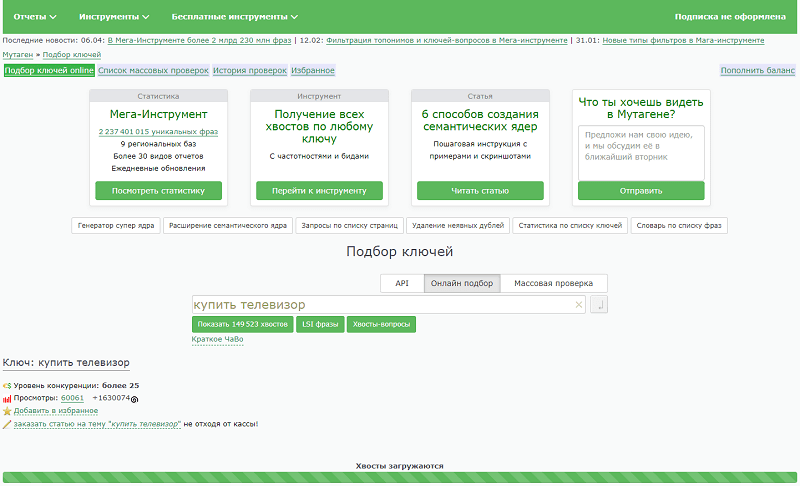

SEO-продвижение, а в идеальном варианте – создание любого сайта начинается с подбора ключевых слов. Чтобы интернет-ресурс поднимался выше в выдаче, нужно понять, какие поисковые запросы вводит Целевая аудитория, и выбрать наиболее релевантные ключи для каждой страницы.

Грамотно составленное семантическое ядро (СЯ) – важный инструмент в оптимизации. Он позволяет разработать логичную структуру сайта, подобрать и внедрить оптимальную стратегию SEO-продвижения, а также рекламы в Google и Яндексе.
В этой статье расскажем, что такое семантическое ядро, для чего оно нужно, как составить и что дальше делать с огромным списком из сотен ключевых слов.
Что такое семантическое ядро
В лингвистике есть раздел «семантика», который характеризуется изучением смысла фраз и отдельных слов. Именно с ним связано понятие «семантическое ядро».
В интернет-маркетинге семантическое ядро – это список ключевых фраз и слов, которые лежат в основе SEO-продвижения интернет-ресурса и приводят на сайт пользователей, которые вводят соответствующие запросы в Google и Яндекс.
Пример. Семантическое ядро интернет-магазина детских товаров будет включать фразы «купить куклу Эльзу», «конструктор Lego цена», «детская кухня дешево», «как выбрать детский самокат» и т. д.
Для чего нужно семантическое ядро сайта
{kind=link}
Семантическое ядро состоит из запросов (ключей), которые люди вписывают в строку поиска Яндекса или Google. С их помощью можно получить такие сведенья:
- какие товары, услуги или данные интересуют пользователей;
- какие фразы они вводят в поисковик;
- зачем хотят узнать те или иные сведенья, например, чтобы купить, выбрать, скачать файл или документы, получить информацию и т. д.
Алгоритмы поисковиков настроены так, чтобы предоставлять пользователям такие результаты, которые максимально соответствуют запросам. Это значит, что страницы сайтов, содержащие правильные ключи, имеют больше шансов попасть в поисковую выдачу.
Семантическое ядро также помогает:
- составить структуру разделов и страниц с учетом иерархии для упрощения навигации по сайту пользователей и роботов;
- оптимизировать страницы интернет-ресурса под запросы для их наполнения релевантным текстом и другим контентом, правильной настройки метатегов;
- отслеживать позиции сайта в поисковой выдаче по нужным запросам;
- разработать контент-план, продумать содержание страниц от статей и видео до каталога интернет-магазина;
- грамотно настроить контекстную рекламу;
- выполнить внутреннюю перелинковку для упрощения навигации по сайту и равномерного перераспределения ссылочного веса;
- оценить покупательский спрос и дополнить ассортимент товарами или услугами, которыми интересуются пользователи, неактуальные продукты, наоборот, исключить.
Чем лучше оптимизирован сайт с точки зрения SEO, тем больше он имеет шансов попасть на первую страницу поисковой выдачи по основному запросу. В этом случае ресурс получит гораздо больше переходов и целевых действий без дополнительных затрат на рекламу.
Как работают поисковые алгоритмы
С каждым годом поисковики становятся «умнее»: лучше понимают контекст интернет-страниц и запросы пользователей. При этом последним уже не обязательно вводить при поиске бессвязный набор тематических слов – алгоритмы хорошо распознают разговорную речь и даже живой голос, умеют применять к словам синонимы и ассоциации. Все это значительно повышает релевантность поисковой выдачи по конкретному запросу.
Google использует алгоритм BERT, который благодаря искусственному интеллекту обрабатывает человеческую речь на разных языках и в разговорных фразах распознает запросы. Для анализа контента сайтов разработан алгоритм SMITH, который по функционалу обходит BERT и способен анализировать весь текст на веб-странице.
В 2020 году был внедрен метод ранжирования пассажей. Алгоритм проводит анализ текста любого объема и показывает фрагмент, который наиболее точно соответствует введенному запросу. Сам отрывок появляется непосредственно в выдаче, а при переходе на страницу его можно быстро найти благодаря подсвечиванию.
Классификация ключевых слов
Семантическое ядро может включать десятки тысяч поисковых фраз. Однако работа с ними строится по-разному в зависимости от того, к какому типу относится конкретное ключевое слово. Далее в статье разберем, какие бывают ключи и по каким признакам их классифицируют.
{kind=link}
По частотности
Чем чаще ключевое слово или фразу используют при персональных запросах поиске, тем выше ее частотность. Выделяют ключи:
- высокочастотные (ВЧ);
- среднечастотные (СЧ);
- низкочастотные (НЧ);
- микронизкочастотные (МНЧ).
Некоторые оптимизаторы определяют четкие цифры частотности. Например, по Яндекс Вордстат: ВЧ – от 10 000 показов, СЧ – от 1 000 до 10 000, НЧ – от 100 до 1 000, МНЧ – до 100. Но такой подход весьма неоднозначный, т. к. в разных тематиках и даже в разных регионах эти показатели могут сильно меняться. Поэтому оптимально определять относительную частотность ключевых слов примерно в таких долях:
- ВЧ-запросы – 10%;
- СЧ-запросы – 20%;
- НЧ-запросы – 30%;
- МНЧ-запросы – 40%.
По бизнес-показателям
Для продвижения коммерческих проектов важно правильно разделять ключевые слова по бизнес-показателям. Они бывают:
- коммерческие – по таким запросам люди ищут продукт с целью его последующей покупки, например:
- купить рюкзак;
- сосновый брус прайс;
- услуги нотариуса Москва цены;
- некоммерческие – их используют люди, которые просто ищут информацию, не собираясь при этом в ближайшее время покупать товар или заказывать услугу, например:
- насос ручеек инструкция по эксплуатации;
- разница между крокодилом и аллигатором;
- Айфон 13 характеристики.
Если планируется продвижение коммерческого сайта, на начальном этапе нужно получить только коммерческие запросы. При запуске рекламы в Google Adwords или Яндекс.Директ, важно собрать и некоммерческие ключи, они будут входить в список минус-слов.
По типу интента
Запросы разделяют в зависимости от того, что собирается делать пользователь:
- информационные – по ним человек ищет конкретные сведенья, например:
- как вывести масляное пятно;
- что подарить ребенку на 3 года;
- рецепт заварного крема;
- транзакционные или коммерческие – пользователь хочет купить конкретный продукт и ищет, где это сделать, например:
- заказать шоколадный букет;
- косметолог в СПб цена;
- курсы актерского мастерства Москва;
- навигационные – их применяют люди, которые ищут конкретную компанию или сайт, например:
- сайт «Госуслуги»;
- банк «Тинькофф»;
- гостевой дом «Русалка»;
- нечеткие или общие – глядя на такие запросы, не очень понятно, с какой целью пользователь хочет получить информацию, например:
- изюм малаяр;
- Япония;
- линолеум;
- медиа-запросы – по ним люди ищут аудио, фото или видео, например:
- сериал ходячие мертвецы 1 сезон 1 серия смотреть бесплатно;
- радио свобода онлайн;
- песня мамонтенка скачать мп3.
По географической зависимости
Разделяют ключевые запросы и по принципу привязки к определенной географической точке. Здесь ключи могут быть:
- геозависимые – выдача формируется в зависимости от конкретного города, региона или страны, в которой находится человек, в каждом населенном пункте она будет своя, например:
- служба такси;
- доставка продуктов;
- купить диван;
- геонезависимые – по таким запросам выдача не зависит от местоположения пользователя и не меняется для разных регионов. Примеры:
- служба такси в Москве;
- доставка продуктов Невский проспект;
- фильм брат кинопоиск.
Другие виды
Отдельно можно выделить следующие запросы:
- брендовые – содержат наименования брендов, продвижение по таким запросам предполагает, что будет создан отдельный каталог с товарами бренда, а также указано его название в описаниях, характеристиках продукции, заголовках H1 и мета-тегах карточек товара;
- витальные – содержат только название бренда или компании, при этом невозможно понять, с какой целью человек использует запрос; в ТОП по витальным запросам попадают прежде всего официальные сайты.
На что обратить внимание при сборе семантического ядра
{kind=link}
Перед тем, как начать сбор семантического ядра, важно определить значения некоторых распространенных терминов, чтобы избежать путаницы в понятиях.
Частотность – число поисковых запросов в месяц. С этим термином мы уже сталкивались выше в статье, когда разбирали виды ключевых слов.
Ранжирование – распределение позиций сайтов в поисковой выдаче с учетом их рейтинга. Последний определяют поисковые алгоритмы на основании данных анализа об адаптивности, оптимизации, скорости загрузки страниц и т. д. Сайты с высоким рейтингом ранжируются лучше, их можно посмотреть вверху выдачи.
Конкурентность запроса – это значение показывает, насколько сложно попасть в ТОП по данному ключевому слову. Зависит от количества конкурентов и качества их сайтов.
Интент – потребность человека, которую он стремится удовлетворить, вводя поисковый запрос. Современные алгоритмы поисковиков умеют угадывать интент даже по обобщенным запросам.
Геозависимость – функция поисковков, которая позволяет адаптировать выдачу с учетом географического местоположения пользователя. Предприятиям, которые работают в одном регионе, важно составлять семантическое ядро с учетом геозависимости.
SEO-подход – способ продвижения, в основе которого лежит создание и оптимизация сайта с точки зрения помощи пользователям. Весь контент, включая текст, должен отвечать на вопросы аудитории и помогать решить поставленные задачи.
Структура сайта – план сайта, составленный на базе семантического ядра с учетом информации, которую нужно донести целевой аудитории.
С основными понятиями разобрались, теперь можно приступать к самому главному – составлению семантического ядра.
Как составить семантическое ядро
Процесс составления семантического ядра для сайта – масштабная работа, которая выполняется в несколько этапов и требует глубокого погружения в тематику и структуру сайта.
Существует два варианта сбора семантики для сайта:
- Традиционное SEO – продвижение сайтов в ТОП поисковой выдачи и привлечение релевантного трафика в максимальном объеме без учета конверсий. При таком подходе оптимизатор собирает перспективные ключевые слова, рассредоточивает их по страницам сайта и оптимизирует под соответствующие запросы текст.
- Маркетинговое SEO – предназначено, чтобы повысить лояльность целевой аудитории и увеличить продажи. В данном случае нужен не просто оптимизированный под SEO, интересный контент, которым люди захотят поделиться, а ответы на вопросы пользователей, поданные в простой и удобной для восприятия форме. Вариант предполагает тесную взаимосвязь семантики с логикой разделов, меню и путем пользователя.
Современные оптимизаторы все чаще ориентируются на маркетолога и выбирают для продвижения коммерческих сайтов второй вариант – маркетинговое SEO. В этом случае семантическое ядро представляет собой не просто перечень ключевых слов, а подробнейшее описание потребностей и интересов целевой аудитории.
Выбор принципов и подходов к созданию ядра
Оптимизаторы собирают семантическое ядро по двум схемам:
- Сбор максимально обширного списка ключевых слов с последующей очисткой от «мусора».
- Изначально идет сбор точных ключей и дальнейшее расширение базы.
Обе эти схемы жизнеспособны и могут использоваться в зависимости от выбранной стратегии оптимизации.
Что касается подходов к составлению семантического ядра, то они зависят от текущего положения дел на сайте. Чаще всего применяют следующие 3 подхода или же разрабатывают индивидуальную стратегию.
- Структура сайта на основе СЯ. В данном случае собираются ключевые слова и на их основе разрабатывается структура сайта.
- Сбор семантического ядра под имеющуюся структуру. Здесь собранные запросы распределяются между категориями и страницами сайта;
- Обновление. Этот подход актуален, когда нужно улучшить SEO-оптимизацию сайта, и схож со сбором семантики под имеющуюся структуру.
Сбор ключевых слов
Это самый важный шаг в процессе сбора семантического ядра. Здесь нужно подумать, как представители целевой аудитории могут искать услуги или товары из вашей ниши. Безусловно, это будут традиционные названия, но также пользователи пишут в поисковой строке синонимы, фразы, похожие по смыслу, а также сленговые выражения.
Рассмотрим способы сбора ключевых слов, которые и лягут в основу будущего семантического ядра.
{kind=link}
Поиск основных запросов
Работа по поиску главных запросов всегда начинается с метода, который носит название «мозговой штурм». Его суть сводится к тому, чтобы написать слова, которые характеризуют бизнес. Подумайте, какие запросы вы вводили бы в поисковик, если бы искали свой сайт. Записывайте в таблицу все, что придет в голову.
Если компания уже работает, к участию в мозговом штурме можно привлечь сотрудников.
- Задайте тот же вопрос специалистам, которые задействованы в разработке продукта и сайта.
- Помогут и клиенты: обратите внимание на то, какие вопросы они задают, когда интересуются отдельными продуктами, консультируются.
- Сотрудники службы поддержки и отдела продаж могут хорошо пополнить ядро.
Пример: для юридической конторы главными запросами могут быть «нотариус», «услуги юриста», «судебный адвокат», «адвокат по уголовным делам» и т. д.
Поиск слов и фраз, связанных с ВЧ-запросами
Вписывая в поисковик главные высокочастотные запросы, можно существенно расширить ядро за счет других подходящих по контексту запросов. При этом нужно учитывать их частотность.
В нашем примере к главному запросу «услуги юриста» можно подобрать соответствующие фразы: «услуги юриста по недвижимости», «услуги юриста цена», «услуги юриста онлайн» и множество других.
Расширение семантики путем комбинирования
Для расширения уже собранной благодаря предыдущим способам базы применяют семантическую матрицу. Она позволяет сформулировать поисковые фразы с уточняющими словами.
В качестве уточнений могут быть:
- категории и наименования товаров или услуг;
- названия бренда, компании, сайта;
- технические характеристики;
- коммерческие слова (цена, стоимость, купить, заказать, оптом, прайс и подобные);
- сервисные слова (гарантия, доставка, отзывы);
- города, районы, улицы, станции метро, местности, регионы, адреса.
Путем комбинирования основных ВЧ-ключей со всеми уточнениями можно получить большое количество ключевых запросов. Нужно провести их анализ и проверить на частотность. В семантическое ядро должны попасть только фразы, приемлемые по частоте.
Поиск синонимов, профессионализмов, сокращений и прочих видов запросов
На этом этапе нужно включить в список следующие варианты запросов:
- синонимы и словоформы продуктов, например, юрист, адвокат, нотариус, юрисконсульт;
- разговорные, сленговые, узкопрофессиональные выражения: наружная реклама – наружка;
- аббревиатуры и сокращения: окна пластиковые – окна пвх;
- варианты иностранной транслитерации: пепси – pepsi;
- варианты ошибок, которые поисковые системы не распознают и не исправляют, например, дом их бруса.
Поиск подсказок
Автоматические подсказки, которые показываются пользователям при вводе ключевых запросов, могут иметь длинный «хвост» из уточняющих слов. Так называемые long-tail ключи – это низко- или микронизкочастотные слова, которые приносят сайту качественный целевой трафик.
Пример: запрос «купить окно пластиковое для мансарды в СПб» информативнее, чем просто «купить окно».
Поисковые подсказки позволяют собрать самые точные ключевые фразы, которые обеспечат целевой трафик на сайт.
Анализ конкурентов
Ключевые слова, по которым конкуренты выходят на высокие позиции в поисковой выдаче, полезно использовать как для улучшения ранжирования сайта в поиске, так и для усиления видимости в контекстной рекламе. Поиску эффективных конкурентных запросов предшествует выявление и анализ лидеров в нише. Кстати, для нового и существующего сайтов этот процесс несколько отличается.
- Если вы только запускаете сайт, в самом начале изучите тематику и свойственные ей ключевые слова, определите сайты, которые находятся высоко в выдаче по этим запросам.
- Если ваш сайт уже работает, отыщите конкурентов, чьи сайты максимально близки к вам по семантике. Сделать это помогают специальные сервисы.
Когда сайты-конкуренты будут выявлены, нужно увидеть, по каким запросам они ранжируются. Здесь могут «всплыть» как эффективные для своего семантического ядра ключи, так и отсутствующие.
Перечисленные выше способы сбора ключевых слов для семантического ядра требуют кропотливой ручной работы. Существенно облегчить ее помогают многочисленные автоматизированные сервисы, о которых мы поговорим ниже в статье. Имея в арсенале такие сервисы, достаточно собрать основные запросы, все остальное сделает программа. Результатом ее работы станет большой список поисковых запросов с данными о частотности по каждому ключевому слову. Это и будет семантическое ядро, с которым еще придется поработать, прежде чем использовать для оптимизации сайта.
Что делать с семантическим ядром
Собранное с помощью специальных сервисов семантическое ядро может включать тысячи и даже десятки тысяч ключевых слов. При ближайшем рассмотрении часть из них окажутся «мусорными», а все остальное предстоит разделить на кластеры для последующего анализа и использования в продвижении сайта.
{kind=link}
Чистка ядра от лишних запросов
После того, как собрано ядро, нужно выделить и оставить только те запросы, которые релевантны целям сайта. Все нецелевые и слова, которые не отражают деятельность компании, необходимо убрать из семантического ядра.
Какие ключи нужно удалять
Удалению из семантического ядра подлежат следующие виды ключевых слов.
- Нерелевантные слова. Не отражают стремление пользователя заказать услугу, купить товар или хотя бы интерес к продукту. Для продвижения коммерческого сайта едва ли будут полезны запросы, по которым люди хотят найти определение какому-либо термину или скачать открытку к празднику.
- Слова, относящиеся к другим тематикам. Все, что не соответствует текущей деятельности фирмы, стоит удалять. Если мебельный магазин продает шкафы, запрос «пожарный шкаф» нужно удалить из СЯ.
- Повторения. При сборе семантики часто встречаются дублирующие друг друга ключи. Для улучшения качества их нужно удалять.
- Продукты, которых не будет на сайте. Нужно избегать ключевых слов, в которых упоминаются отсутствующие в прайсе бренды, товары с несуществующими характеристиками. Подобные ключи в тексте сайта вводят в заблуждение пользователей, что приводит к снижению кликабельности и росту отказов.
- Наименования брендов, компаний, сайтов конкурентов. На первом месте в органической выдаче по таким запросам будет сайт конкурентов. Контент-маркетинг допускает их применение, только если на сайте планируется разместить контент, связанный с конкурентами, например, сравнение брендов или обзор сервисов. А вот для контекста такие запросы используют более активно: так у вас получится переманить клиентов.
- Слова с ошибками. Использовать их на сайте нет смысла, поскольку поисковики умеют не только исправлять опечатки и грамматические ошибки в запросах пользователей, но и распознавать комбинации символов, которые получаются при наборе русских слов латиницей.
- Фразы со словами «своими руками», «бесплатно», «скачать» и подобные. В e-commerce такие ключевые слова относятся к нецелевым. Их можно использовать только в том случае, когда тематика ресурса соответствует предмету поиска аудитории, например, сайт о handmade.
- Запросы, которые не подходят по географической принадлежности. Их стоит удалять тем, кто работает локально в конкретных населенных пунктах.
Как выполнять очистку
Существуют разные подходы к очистке семантического ядра от неподходящих ключевых слов и словосочетаний.
- До кластеризации. В этом случае ненужные запросы удаляют сразу после сбора семантического ядра.
- После выявления релевантных запросов. Подход предполагает определение ключевых слов, которые пригодятся для SEO продвижения сайта, а затем удаление лишних.
- Исключение нецелевых групп. В ходе кластеризации создаются тематические группы, включающие максимум запросов. После этого ключи, не относящиеся к сайту, выделяются в отдельные группировки.
- Тегирование. В данном случае проводят анализ не отдельных запросов, а целых категорий. Предварительно их разделяют на группы по общим признакам, формируют карту соответствий. При этом корень запроса отделяется от тегов (меток). Категории запросов с неподходящими тегами исключают из СЯ.
Чистка ядра с помощью Key Collector
Программа Key Collector дает возможность автоматизировать очистку семантического ядра от мусорных запросов. Чтобы запустить этот процесс:
- Выбираем вкладку «Данные» и кликаем на «Анализ групп».
- Выбираем группировку по отдельным словам.
- Отмечаем галочками все неподходящие ключи.
- Во вкладке «Сбор данных» нажимаем кнопку «Удалить фразы».
Оставшееся ядро остается экспортировать и проверить.
Кластеризация списка запросов
Когда готово актуальное ядро, его нужно кластеризировать, т. е. сгруппировать.
Кластеризация – разделение запросов на группы по различным признакам. Это позволяет в дальнейшем грамотно реализовать рекламную и SEO-стратегию, распределить ключевые слова по разделам и страницам сайта, создать релевантный, полезный для пользователей контент.
Основы кластеризации
Семантическое ядро делят на кластеры по-разному.
Кластеризация по ТОПу поисковой выдачи. Органическую выдачу по запросам разделяют на три категории: hard, middle и soft. Hard-кластеризация встречается чаще всего и является самой удобной. Если по ключевым словам есть страницы, которые встречаются в ТОП-10-20 и так далее, эти запросы можно отнести к одной группе. Так образуется группировка запросов.
{kind=link}
Кластеризация по намерениям. Проводится определение интента или цели запроса, т. е. выявляется намерение, с которым пользователь пишет запрос. Чем более очевидно намерение, тем релевантнее выдача.
Пример. Интернет-магазин туристических принадлежностей. Запросы «туристическая палатка магазин», «туристическая палатка виды» и «туристическая палатка freetime» имеют всего одно переменное слово, но по каждому из них будет показана разная органическая выдача: страницы с товаром, информационные статьи, обзоры брендов.
Определять интент запросов очень важно. Это необходимо, чтобы лучше понимать цели аудитории и адаптировать сайт под ее потребности для лучшего ранжирования веб-страниц.
Кластеризация по геолокации. Здесь выделяют ключевые слова с привязкой к геолокации пользователя и без нее. При этом не всегда геозависимые запросы включают наименование конкретного населенного пункта или местности, но выдача все равно привязывается к географической локации.
Поисковые запросы без географической детализации обычно более конкурентные. Пример: по запросу «доставка еды» будет гораздо сложнее попасть в ТОП, чем по фразе «доставка еды в Минске».
Компаниям, которые работают в конкретных городах или регионах, нужно создать отдельные кластеры ключей с их упоминанием и использовать их в ходе оптимизации сайта.
Кластеризация по частотности. Зная, с какой периодичностью пользователи вводят запрос, можно предположить объем получаемого трафика в том случае, если сайт выйдет в ТОП.
Виды частотности ключевых слов мы уже рассматривали в статье выше, читайте раздел про классификацию. Сейчас отметим, что ВЧ-запросы самые конкурентные, а это не подойдет для продвижения молодых сайтов. Наиболее эффективны при продвижении низкочастотные и частично ключи с средней частотой.
В разных нишах, регионах и даже поисковых системах могут быть разные диапазоны популярности ключевых слов. Так, в одном случае запрос с частотой 300 будет низкочастотным, а в другом это значение окажется высокочастотным. Универсальной классификации по диапазонам частотности не существует.
Благодаря кластеризации запросов по частотности можно эффективно реализовать рекламную и SEO-стратегии. В частности, ключевые слова распределяются по страницам сайта с учетом иерархии:
- высокочастотные – на главной странице;
- среднечастотные – на страницах категорий;
- низкочастотные – в карточках товаров.
Составление списка минус-слов
При запуске рекламной кампании в Яндекс Директ и Google Ads полезно сформировать список стоп-слов. Это помогает снизить число нецелевых показов и переходов по рекламе незаинтересованных пользователей.
Например, ремонтной мастерской стоит прописать минус-слова «своими руками», «бесплатно», «онлайн». Благодаря этому удастся исключить показы рекламных объявлений нецелевой аудитории.
Составить список стоп-слов можно на этапе чистки и кластеризации семантического ядра. Сделать это можно вручную или автоматически с помощью специальных сервисов.
Распределение ключевых слов по страницам
Правильное распределение ключей повышает эффективность продвижения сайта. Запросы на странице должны соответствовать ее контексту. Отдельные страницы, например, главная, описания категорий, могут содержать ключевые слова из разных тематических групп. Распределение СЯ по страницам стоит производить по принципу сужения.
При большом количестве запросов можно создавать дополнительные разделы и страницы, чтобы охватить весь пул ключевиков, например, информационный раздел со статьями.
Как быстрее кластеризировать по URL
Для правильного распределения поисковых запросов между веб-страницами нужно все семантическое ядро разделить на тематические группы и для каждого указать частотность. Сделать это можно вручную, а также, используя сервис KeyAssort. Последний позволяет разделить ключевые слова по позициям выдачи: если разные страницы из ТОПа ранжируются одновременно по всем запросам, они объединяются в одной группе.
Что делать, если кластеры по ТОПу и интенту не совпадают
При идеальных условиях автоматическая кластеризация подразумевает, что в группах будут запросы с одинаковым интентом, но на практике так бывает не всегда. Часто в один кластер попадают разноцелевые запросы. В таком случае разные оптимизаторы практикуют разные выходы из сложившейся ситуации.
Говоря о продвижении в Google, более логичен приоритет кластеризации по позиции выдачи. Но расхождения между логикой продукта и поисковой выдачей свидетельствуют о том, что не все слова из ниши правильно понимаются поисковой системой. Важно периодически возвращаться к этому вопросу и проверять ситуацию с семантикой.
Другой подход – это поиск золотой середины. В первую очередь проводится кластеризация по ТОПам – это проще и быстрее. Затем результаты отчетов сопоставляются со смысловыми группами. Элементы ядра, которые однозначно совпадают, тут же уходят в работу, остальные запросы обсуждаются.
Проверка «коммерческости» запроса
По интенту запроса можно понять цель автора, который добавляет его в строку поиска, и определить, коммерческий или информационный характер носит данная фраза. В зависимости от этого поисковая система подбирает релевантные ссылки и показывает их в выдаче.
Поскольку Google и Яндекс распознают не только тематику и смысл фразы, но также цель пользователя, запросы с разным интентом распределяют между разными страницами. При этом интент тесно связан со спросом на продукт и может изменяться. Одно и то же ключевое слово может быть и информационным, и коммерческим в разное время.
Для определения «коммерческости» поисковых запросов используют сервис majento.ru. Он показывает, какие из введенных фраз коммерческие, какие информационные, а какие смешанные. Так, коммерческие запросы не должны использоваться для продвижения информационных веб-страниц, а смешанные допустимы.
Проблемы при кластеризации
В ходе кластеризации можно столкнуться с двумя распространенными проблемами.
Есть страница, а ключей для нее нет. Это не повод исключать страницу из структуры сайта. Если при ручной проверке в Google или Яндексе окажется, что есть подходящие по смыслу ключевые фразы, их можно смело включить в кластер и использовать. Здесь может возникнуть еще одна сложность – нулевая частотность. В таком случае страницу можно оставить вовсе без оптимизации под какие-либо слова, на продвижении это не скажется.
Лишние запросы после кластеризации. При большом семантическом ядре это распространенная проблема. Здесь может быть три выхода:
- использовать оставшуюся часть ядра для информационного раздела;
- вручную распределить лишние запросы между подходящими по смыслу группами;
- создать дополнительные страницы под ключи, которые не вошли в основные кластеры.
Результат качественной кластеризации – полноценное и готовое к использованию семантическое ядро. На основе него может создаваться контент для сайта и объявления контекстной рекламы.
Сервисы для парсинга и кластеризации семантического ядра
Вручную составлять семантическое ядро и работать с ним трудно и долго. Для облегчения и ускорения работы по сбору и кластеризации СЯ повсеместно используются специализированные программы и сервисы.
Яндекс.Wordstat
Это бесплатный сервис, который позволяет вручную собирать запросы для сайтов и интернет-магазинов, содержащиеся в базе Яндекса. Инструмент помогает сформировать общую картину интересов пользователей и понять, какие фразы аудитория вводит для поиска тех или иных товаров/услуг.
Яндекс Вордстат показывает:
- ключевые слова;
- похожие запросы;
- актуальную статистику;
- частотность с учетом выбранного региона;
- историю запросов.
Из минусов – отсутствие автоматизации. Кроме этого, сервис позволяет только собрать семантическое ядро, для последующих действий нужны дополнительные инструменты.
Yandex Wordstat Assistant
Это бесплатное браузерное расширение, которое помогает в работе с Яндекс.Вордстат.
- Импортирует запросы из Вордстат в MS Excel.
- Сортирует ключевые слова по алфавиту, частотности, порядку добавления.
- Допускает ручное добавление ключей.
- Самостоятельно ищет дубли.
Инструмент доступен пользователям браузеров «Яндекс.Браузер», Opera, Google Chrome, Mozilla Firefox.
Google Keyword Planner
Планировщик для сбора ключевых слов из базы Google. Доступ к инструменту можно получить бесплатно через аккаунт Google Рекламы.
- Показывает развернутую статистику по нужному запросу и подобранным к нему ключам.
- Подбирает похожие и релевантные запросы, подсказки, показывает частотность.
- Использует показатель сложности для понимания уровня конкуренции в выдаче по конкретному запросу.
- Демонстрирует стоимость клика для оценки уровня конкуренции в контекстной рекламе.
- Проверяет одновременно несколько ключей.
Чтобы использовать инструмент для сбора семантики, нужно создать рекламную кампанию в Google.
Key Collector
Один из самых популярных сервисов для автоматизированного сбора семантического ядра.
- Собирает ключевые слова из Яндекс.Вордстат.
- Собирает данные из сервисов аналитики и Google Ads.
- Парсит подсказки из поисковиков.
- Чистит семантическое ядро от дублей, стоп-плов, сезонных и других лишних запросов.
- Фильтрует семантику по частотности на основе данных их Яндекс Директ, Google Ads, Rambler Adstat, LiveInternet, APIShop.com.
Оптимизаторы любят Key Collector за большое количество источников парсинга, глубокий сбор ключей и возможность их группирования.
Из недостатков – медленная работа сервиса при большой глубине сбора, а также необходимость покупать антикапчи. Кроме этого, инструмент является платным. Лицензия обойдется частному пользователю в 2 200 р., организации – в 2 300 р.
«Словоеб»
Бесплатная альтернатива программе Key Collector. «Словоеб» имеет схожий принцип работы и интерфейс, но возможности несколько ограничены. Программа парсит ключи только из Яндекс.Вордстат, Rambler.Adstat, использует подсказки Яндекса и Google. Данные о частотности ключевых слов тоже берутся только из Вордстат. Несмотря на небольшой функционал, автоматический сбор семантики происходит в разы быстрее, чем вручную.
MOAB.Tools Семантика
Онлайн-сервис с возможностью собирать из Wordstat и подсказок до 4 млн ключевых фраз в час.
- Учитывает длинные «хвосты» спецификаторов.
- Ищет ультранизкочастотные слова.
- Позволяет выбирать регион.
- Проверяет частотность онлайн.
- Не требует ввода капчи.
- Может объединять результат с Key Collector.
Сервис платный, но есть возможность собрать первые 5 000 ключей без оплаты какого-либо тарифа.
Serpstat
Функциональный инструмент, который позволяет не только собирать семантическое ядро, но также проводить кластеризацию и SEO-анализ.
- Собирает семантику с учетом конкурентности и частотности ключей по шкале от 1 до 100.
- Отображает сложность продвижения.
- Группирует ключи по рекламный кампаниям и страницам с учетом однородности.
- Сравнивает результаты с конкурентными сайтами.
- Работает с выдачей по региону.
Для использования сервиса нужно купить подписку, но есть и общедоступная версия с ограниченными возможностями.
Rush Analytics
Онлайн-сервис для автоматизации сбора поисковых запросов и кластеризации.
- Собирает ключи из баз Яндекс.Вордстат, Google Ads.
- Отображает частотность запросов.
- Парсит подсказки из Google, Яндекс и YouTube.
- Кластеризует ключи методом Hard и Soft.
- Составляет структуру сайта в автоматическом режиме.
Сервис платный с бесплатным пробным доступом к урезанному функционалу в течение 7 дней.
Пиксель Тулс
Это сервис, который включает одновременно целый ряд инструментов для сбора семантики и последующей работы с ней.
- Автоматическая генерация базового пула ключевых слов с сайта в модуле «Проекты».
- Определение коммерциализации, локализации и геозависимости ключа.
- Оценка запросов на предмет интента.
- Парсинг подсказок в Яндексе, Google, Avito.
- Парсинг похожих ключей.
- Кластеризация по позициям в поиске.
- Подробный анализ запроса и т. д.
KeyAssort
Платная программа для автоматической кластеризации семантического ядра и создания на его основе структуры сайта. KeyAssort умеет находить лидеров рынка в обозначенном сегменте.
ПО не собирает запросы, а лишь обрабатывает уже собранную базу семантики.
«Мутаген»

Сервис с платной подпиской, который помогает парсить ключи с конкурентных сайтов и определяет их частотность. С его помощью можно:
- определить конкуренцию по конкретному запросу;
- собрать семантику на базе геонезависимых конкурентных ключей;
- расширить СЯ;
- узнать параметры запроса: позиции, частотность, «хвосты», LSI-слова;
- парсить Яндекс.Вордстат;
- кластеризовать семантическое ядро.
Keys.so
Довольно широкий функционал данного онлайн-сервиса позволяет:
- анализировать кириллические ключевые слова, трафик, позиции сайтов конкурентов;
- сравнить конкурентные ресурсы по видимости, позициям в выдаче, посещаемости;
- собрать семантику одного или нескольких конкурентов;
- парсить контекстную рекламу в Гугле и Яндексе;
- создать семантическое ядро, расширить его дополнительными запросами, группировать вручную или автоматически.
Сервис доступен по подписке платно.
SpyWords
Данный сервис в онлайн-режиме работает с ядром конкурентов. С его помощью можно:
- проанализировать каждого конкурента и сравнить их;
- собрать качественные ключи на основе сайтов конкурентов для контекстной рекламы и SEO;
- провести кластеризацию семантического ядра.
Подписка на SpyWords платная.
«Букварикс»
С помощью этого сервиса можно бесплатно собрать от 1 до 3 тысяч ключевых слов. Поиск осуществляется по домену. Интерфейс удобный. Парсинг происходит быстро, для сбора семантики не нужно ждать несколько часов. Для постоянного использования «Букварикса» потребуется купить ежемесячную подписку.
Ahrefs
Данный сервис особенно удобен тем, кто ориентирован на зарубежный рынок. Крупнейшая поисковая база в мире, поэтому здесь можно быстро собрать качественные англоязычные ключи. Сервис довольно дорогой для России. Месячная подписка стоит в пределах 69-999$. Однако есть пробный 7-дневный период.
SemRUSH
Конкурент предыдущего сервиса. База поисковых запросов меньше, но для быстрого дополнения семантики вполне подходит. Цена, как и у Ahrefs, достаточно высокая по российским меркам – от 120$ ежемесячно.
Примеры использования семантического ядра
Семантика нужна для SEO, SMM, контекстной рекламы в Яндексе и Google, а также для продвижения по другим каналам, которые используют поиск товаров, услуг или данных по запросам.
Готовое семантическое ядро используют следующим образом.
Органический трафик
- создание структуры сайта или ее улучшение;
- понимание, чем интересуется целевая аудитория;
- поиск идей для тематического контента;
- оптимизация html-тегов;
- продвижение визуального контента;
- подготовка анкор-плана для внешних ссылок и перелинковки;
- написание текста (SEO-копирайтинг);
- формирование списка, чтобы отслеживать позиции сайта в выдаче;
- настройка чат-ботов и подготовка ответов на распространенные вопросы пользователей.
Рекламные кампании
В контекстной рекламе Яндекса и Google ключевые слова применяются в качестве таргетинга. Также они играют роль в выборе площадок для публикации баннерной рекламы. Группы рекламных объявлений создаются на базе готовых кластеров СЯ, которые используются для SEO, или же проводится дополнительная сортировка поисковых запросов.
Поисковая реклама допускает применение ключей с частотностью не менее 10-20. Низкочастотные запросы не обеспечат показов объявлению или оно будет показываться также и по другим запросам, которые поисковая система сочтет релевантными.
Подходит для рекламы и таргетинг по ключу с модификатором широкого соответствия, например, «+купить+пальто». Это позволит поисковику показать рекламу и по запросу «купить пальто недорого», и «где купить мужское пальто». Отслеживая в Метрике, какие комбинации приносят конверсии, можно включить их в список СЯ для рекламы.
Другие каналы продвижения
Для всех каналов, в которых пользователи ищут что-либо через поиск, актуально использование ключевых фраз. Заранее собранное семантическое ядро позволяет грамотно продвигать свой сайт в маркетплейсах, на YouTube, в соцсетях и т. д.
Для примера рассмотрим использование семантического ядра в качестве основы для контент-плана. В данном случае:
- ключевые слова – это то, что ищут пользователи через поиск в Google и Яндексе;
- задача – готовить контент, который будет соответствовать запросам аудитории, отвечать на ее вопросы.
Предположим, что один из запросов в семантическом ядре – «как заказать прогулочную коляску». Это и будет тема статьи в блог. Пишем материал для привлечения интересующихся пользователей. В статью можно добавить товарную карусель или ссылку на каталог прогулочных колясок. Это позволит получить, кроме целевого трафика на сайт, еще и конверсии в продажу.
Контент-план должен содержать как популярные запросы, так и фразы, хорошо отражающие потребность пользователей, посещающих сайт. Важно не поддаваться на соблазн публиковать контент ради контента. Если какой-либо ключ выходит за рами интересов ЦА, лучше вовсе его исключить из контент-плана.
Советы по работе с семантическим ядром
Рассмотрим основные рекомендации, которые помогут правильно собирать и осуществлять обработку СЯ.
{kind=link}
- Работайте в паре с заказчиком. Он хорошо знает свой бизнес и свою ЦА, вы знаете маркетинг и разбираетесь в специфике поиска. Плотная совместная работа позволит собрать наиболее полное и актуальное семантическое ядро.
- Собирайте синонимы. Они расширяют семантику, охватывают дополнительные сегменты ЦА и способны привлечь дополнительный трафик на сайт.
- Используйте прогноз бюджета в Яндекс Директ. Инструмент позволяет ввести запрос и получать по нему подсказки из базы Яндекса.
- Не забывайте о правой колонке в Wordstat. Сервис нередко показывает там неявные ключи, но они могут пригодиться в СЯ.
- Проверяйте однокоренные слова. В поисковиках разные слова с одинаковым корнем – это разные ключи, например, «кошачий» и «для кошек» – не одно и то же. Игра с суффиксами и приставками поможет получить больше новых фраз.
- Подумайте о неочевидных запросах. Околотематические слова и синонимы могут значительно расширить семантику.
- Используйте разные варианты написания слов. Например, названия брендов на русском, английском, транслит, а также возможные сокращения или аббревиатуры.
- Загляните в каталог. Для интернет-магазина он может стать основным источником ключей для семантического ядра. Кроме своего каталога, можно использовать и конкурентные.
- Не игнорируйте ВЧ и НЧ-запросы. Именно с помощью низкочастотных ключей можно максимально охватить семантику и быстро вывести в ТОП молодой сайт за счет низкой конкуренции. ВЧ-запросы обеспечивают создание контент-плана и удобной структуры сайта.
- Не бойтесь удалять. Неподходящие по тематике ключи могут привести на сайт нецелевой трафик, что снизит его показатели и ухудшит охват.
- Уделяйте внимание распределению. Ключевые слова должны равномерно распределяться по страницам и строго отражать их тематику. Не нужно оптимизировать страницу одновременно под информационные и коммерческие запросы.
- Правильно прописывайте ключи. О фразах в стиле «окно пвх купить Краснодар недорого» давно пора забыть. Поисковые запросы должны быть вписаны в тексте морфологически правильно и не бросаться в глаза читателю.
- Используйте SEO для маркетинга. При сборе СЯ отталкивайтесь от маркетинговых задач, чтобы привлекать трафик, который будет конвертироваться в продажи и прибыль.
Ошибки при составлении семантического ядра
Составление СЯ – долгая и кропотливая работа. Начинающим оптимизаторам едва ли удается собрать семантику, не допустив ошибок. Разберем, с какими проблемами можно столкнуться при сборе ключей.
{kind=link}
- СЯ состоит только из очевидных маркерных ключевых слов и фраз.
- Отсутствуют синонимы, профессионализмы, словоформы.
- Нет геозапросов.
- Слишком много ключей подобрано для одной страницы.
- Под похожие по смыслу запросы созданы разные страницы.
- Ключи неправильно распределены по URL.
- Семантика плохо очищена от лишних запросов.
- Отказ от использования ВЧ и НЧ-запросов.
- Создание ненужных страниц ради ключей.
- Сбор семантики только автоматизированным способом.
- Оценка поисковых запросов с помощью коэффициентов и формул.
Часто задаваемые вопросы
Только в этом случае оно принесет нужный результат. Если же СЯ будет собираться неправильно, есть риск:
- потерять часть трафика из-за неучтенных ключей;
- создать на сайте ряд URL-адресов вместо оптимизированных страниц;
- обеспечить конкуренцию страниц одного сайта, оптимизированных под один и тот же запрос.
Оба варианта имеют право на жизнь. Но нужно учитывать, что создание структуры сайта на основе семантического ядра опирается на потребности и запросы ЦА, которые со временем могут изменяться. Если же ключевые слова распределяются по готовой структуре, это отражает ваше видение сайта.
Составление семантического ядра – работа механическая, для ее выполнения нужны определенные навыки, но не самая сложная. При желании можно научиться собирать СЯ самостоятельно. Если вы хорошо знаете свой бизнес и аудиторию, в дальнейшем планируете самостоятельно развивать проект, не составит труда пройти все этапы, перечисленные в нашей статье.
Если же сайт планируется масштабный, например, крупный интернет-магазин с большим количеством категорий и товаров, в одиночку без опыта, скорее всего, справиться не получится. В таком случае помощь специалиста лишней не будет. Он соберет и с вашей помощью кластеризирует СЯ, которое вы сможете использовать для дальнейшей работы над сайтом.
Никаких норм по количеству ключей не существует. Семантика полностью определяется числом категорий и товаров, которые будут представлены на сайте, популярностью ниши, географией рынка и прочими факторами. Важнее всего не количество, а их потенциал.
Это зависит от тематики. Отдельные сферы, особенно в коммерческом сегменте, требуют актуализации семантического ядра ежемесячно, в других достаточно уделять внимание расширению раз в год. Для этого используют специальные сервисы, с помощью которых можно актуализировать частотность текущего СЯ и отыскать недостающие ключевые слова.
В Интернете достаточно сайтов, которые предлагают целые базы семантики с огромным архивом ключей, например, «Мутаген», «База Пастухова», KeyBooster, UP Base и подобные. Они определенно полезны при сборе СЯ для крупных проектов, но стоит учитывать, что в числе их пользователей наверняка есть и ваши конкуренты. Кроме того, важно проверять собранные запросы на конкурентность и актуальность. Пользоваться только готовыми базами без ручного расширения СЯ не рекомендую, т. к. в них могут отсутствовать важные для вашего проекта запросы.
В отдельных случаях это допустимо. Например, когда:
- поиск таких слов и создание страниц оказывается минимально трудозатратным, к ним могут относиться страницы SEO-фильтров в интернет-магазинах;
- ключи имеют нулевую частотность только в заданном регионе, а в других показатель выше 0;
- рассматриваются ключи с неабсолютным нулем, то есть частотность 0 фиксируется на момент проверки, а история содержит запросы по этому ключу.
Заключение
Семантическое ядро лежит в основе всех сайтов, а также рекламных кампаний в Яндексе и Google. Ключевые слова нужны и для других каналов продвижения, которые предполагают введение пользователями поисковых запросов, чтобы найти нужную информацию. От того, как правильно и насколько точно подобраны фразы, зависит эффективность оптимизации и продвижения страниц, целевой трафик и решение маркетинговых задач бизнеса. Все это обеспечивает грамотно собранное и кластеризированное семантическое ядро.
Оставить комментарий
Войти с помощью